01 — Overview
Why is it Woobee Archive?
Woobee Archive is my personal portfolio website, a digital atelier for my art works.
I chose this portfolio to be archival to express my multidisciplinary background. While I currently focus on website building and UX/UI designs, I come from a fine arts background with some experience in media arts as well including cinematography, 3D works, and video editing. This is my third design system for this portfolio and these processes were a chance for me to research about myself and embracing the multidimensionality of a person.
The Challenge
The old archival design system had low hierarchy order of my projects from UX/UI case studies, fine art paintings, and a pixel-art character design all sitting under the same skeuomorphic folder icons and brass borders.
The Goal
A shift towards professional, green-based system with a mix conceptual and utilitarian design, with just enough dark-academia for a serif font highlight.
02 — Design Decisions
The new palette is two anchors —
A no-box navigation
The primary nav is fixed top-right with mix-blend-mode: difference, so one plain-text nav auto-inverts and stays legible over both the dark hero and the porcelain content below — no boxes, no pills, no borders.
Shared CSS architecture
One main.css file holds the design tokens and every page's styles, scoped by a body class per page (page-home, page-about, page-archive, page-woobee) so each page can be migrated onto the new theme independently.
Hairlines, not borders
Dashed brass borders and card shadows were replaced with single 1px breaklines.
New palette
Porcelain (#FBFEF9) as the paper/surface and evergreen (#19381F) as the near-black ground — with moss.
New font types
Serif type (Stardos Stencil, then Noto Serif KR for Hangul glyphs like 은아라) for my name and project titles while everything else runs on Inter for body copy and IBM Plex Mono for labels, tags, and index numbers.
The Hero
The homepage hero is full-viewport and stays pinned in place. Translucent green-grey blobs that drift and merge, one trailing the cursor — the current version.
Projects
Below the hero, the homepage lists my UX/UI case studies with the mini tag now shown directly under each title, not just on hover. Hovering or focusing a row pops up a preview panel on the right with that project's tag, title, and description — completely hidden by default, scaled and sized to actually use the space the narrower list column leaves open.
03 — Process
This is my third iterated portfolio since I learned how to code. Before I ever touched this codebase, there was a round of paper wireframing, then a fully built site called Moribee Studio, then a second site called Studio Woobee (later renamed Woobee Archieve). Each one got rebuilt from the ground up as I learned more about what a portfolio actually needs to do. Below are real screenshots pulled straight from that history.
Stage 1 — Early sketches
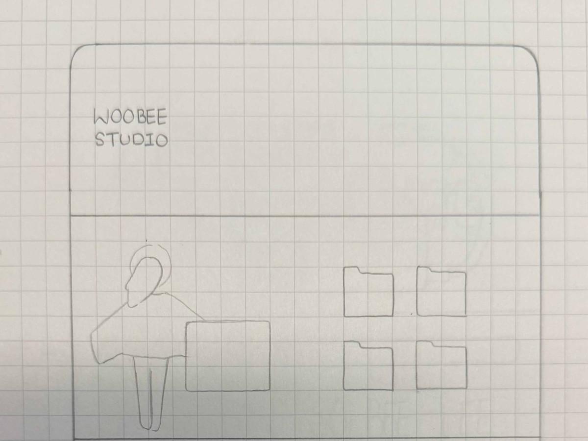
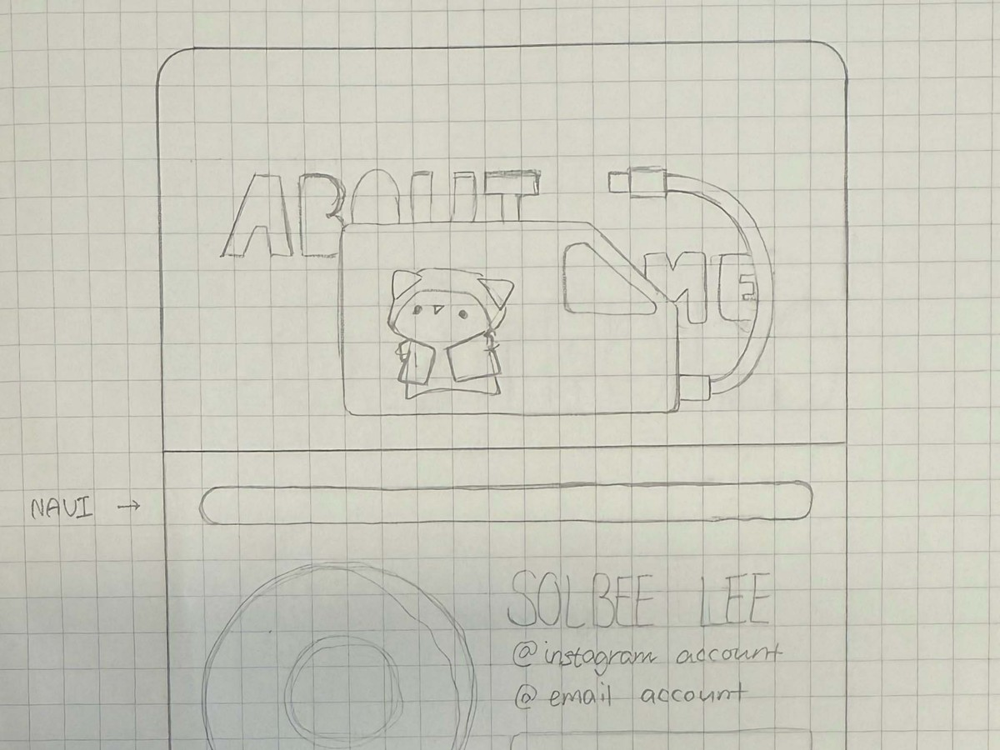
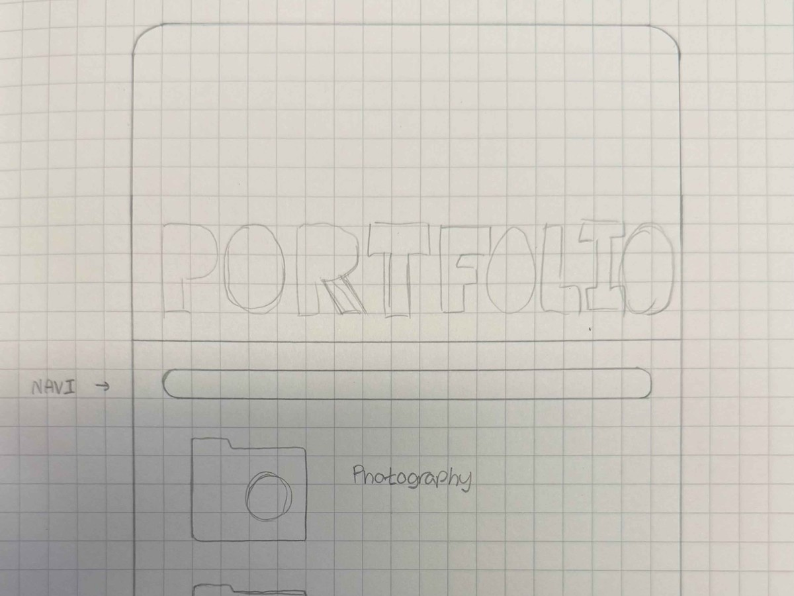
Stage 2 — First portfolio: Moribee Studio
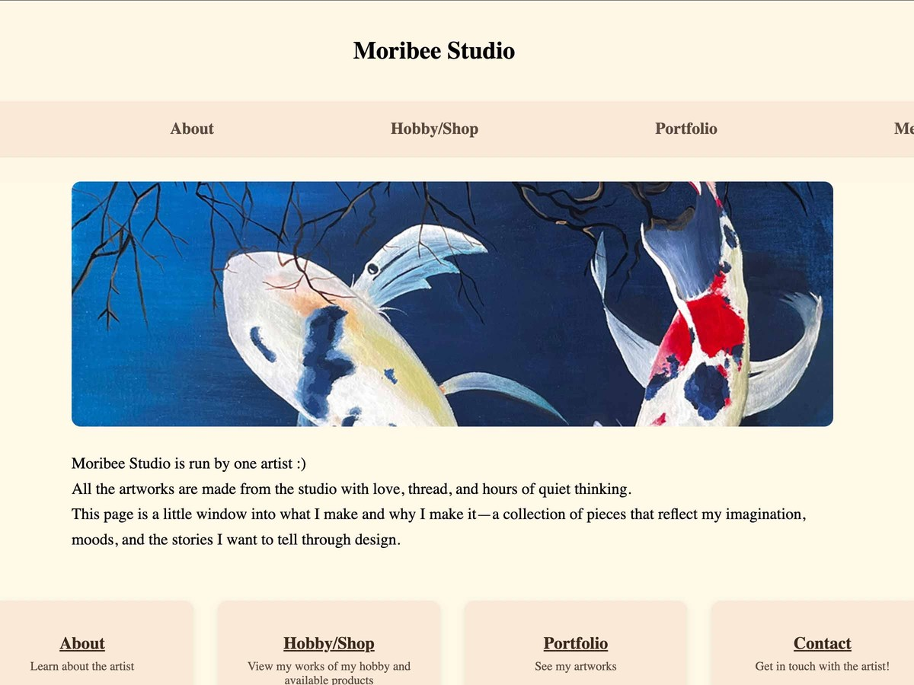
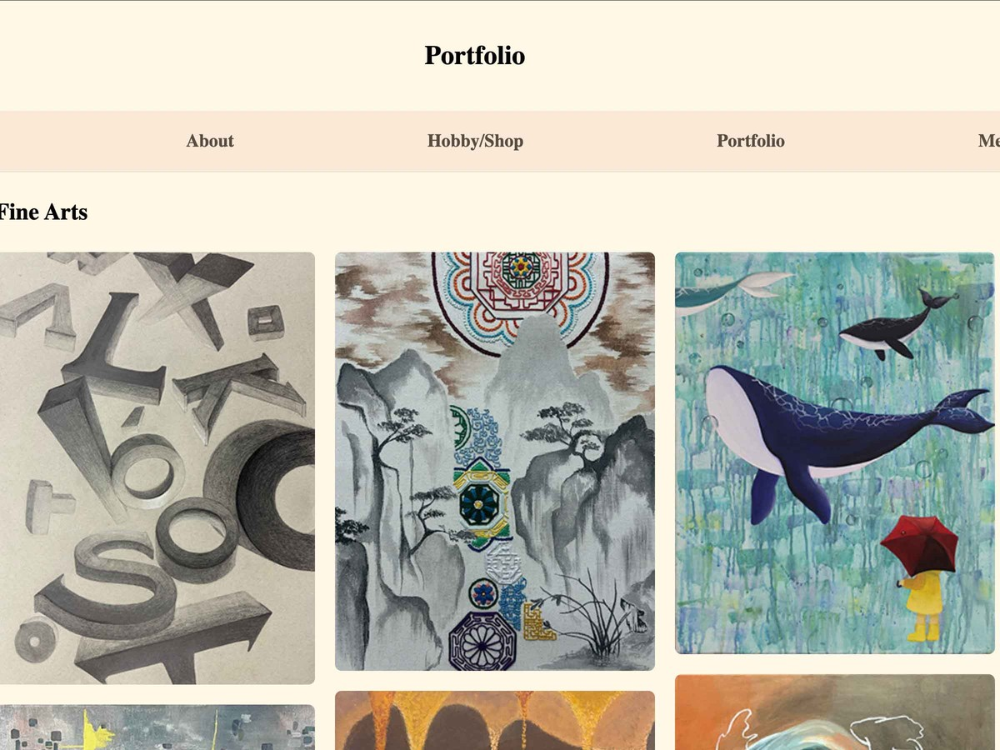
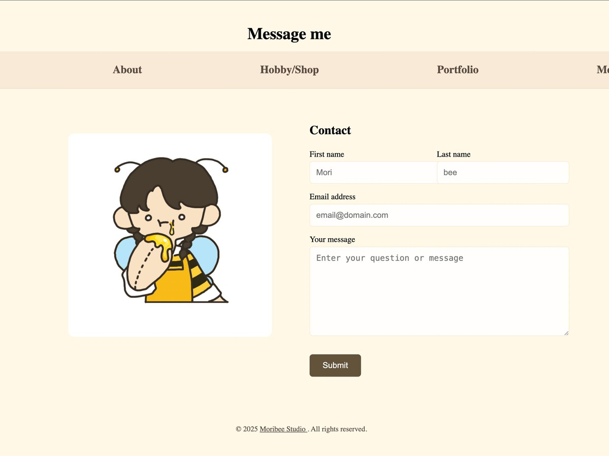
Stage 3 — Second portfolio: Studio Woobee
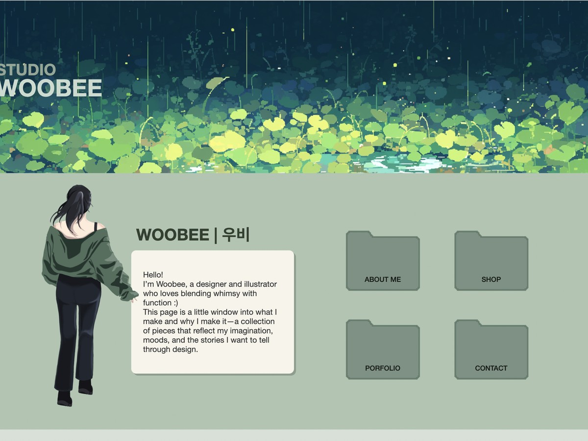
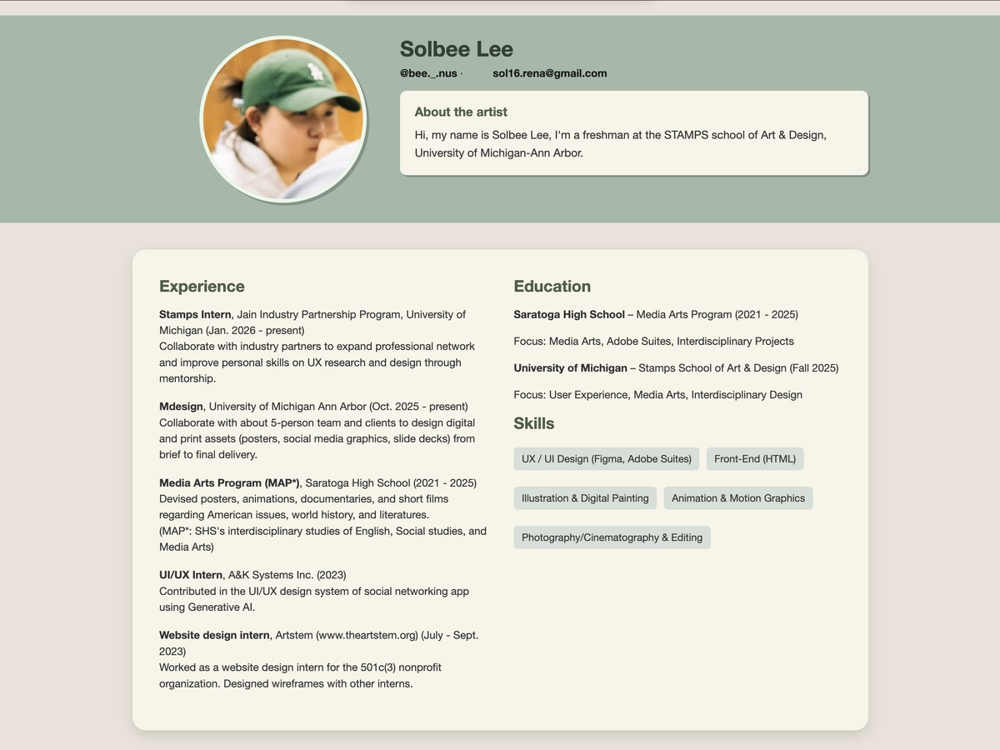
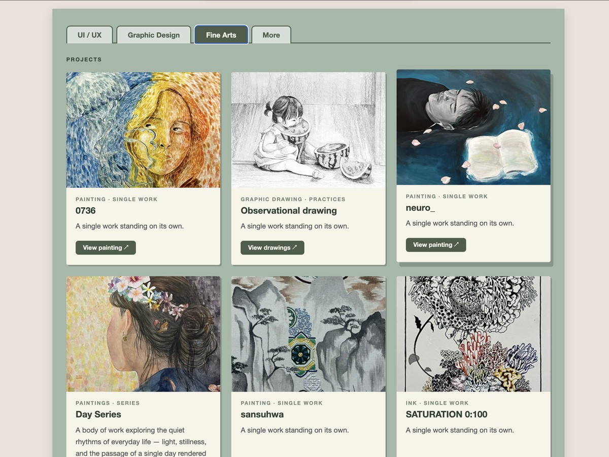
Stage 4 — Current design
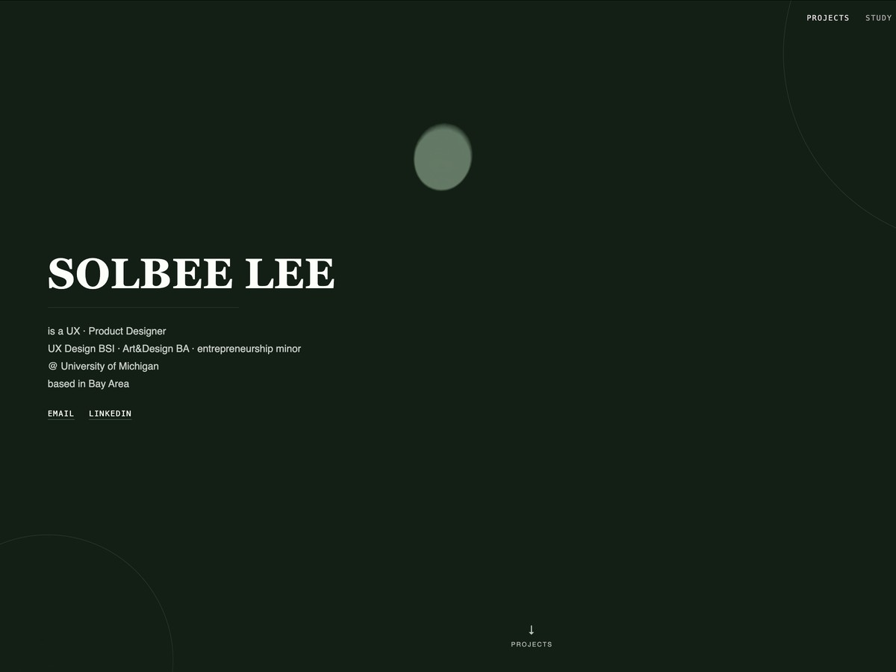
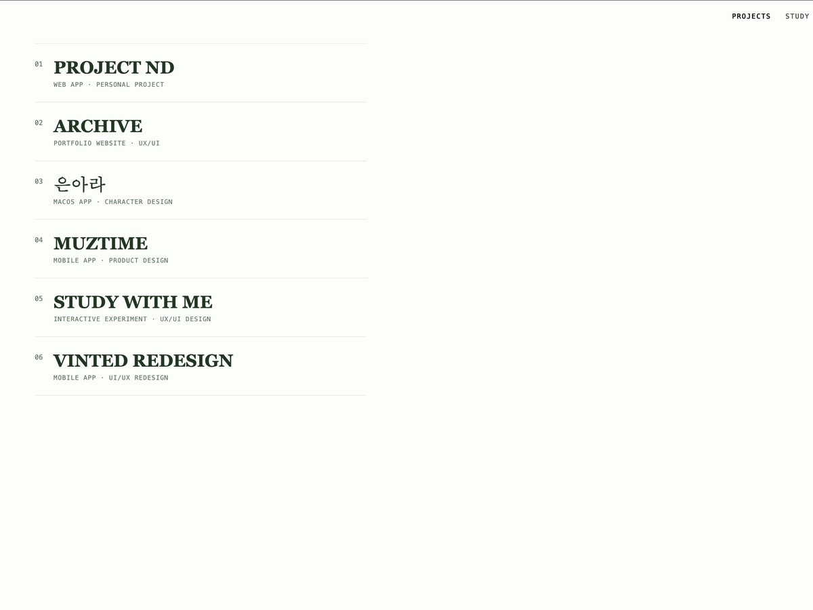
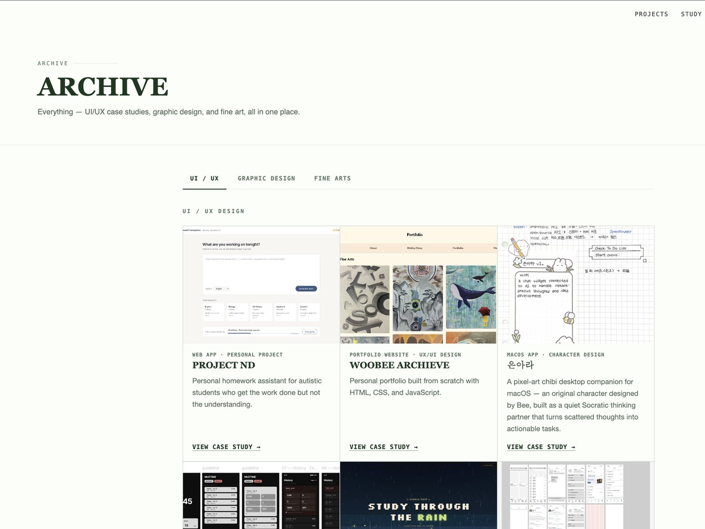
06 — Reflection
Looking Back at the Growth
Seeing all three portfolios side by side is honestly the most useful part of this page for me. The paper wireframes were me figuring out what sections even belong on a portfolio. Moribee Studio was the first time I shipped a real, multi-page site — but it was built page by page, with very little thought given to a consistent system. Studio Woobee was a step forward in identity (one hero, one palette, one mascot), but the structure underneath was still mostly guesswork.
Growth as a designer
The clearest change across the three versions is restraint. The earlier sites reached for a mascot, a hand-painted hero, a folder-icon metaphor — charming, but doing a lot of the visual work instead of the layout. This version leans on fewer, more deliberate choices: one accent color per case study, a consistent type scale, and a hero built to hold up across the whole redesign rather than being redrawn every time the mood changed.
Learning UX/UI basics
Building three portfolios back to back is where a lot of the fundamentals actually clicked — information hierarchy, why a nav shouldn't compete with the content it's pointing to, what "consistent spacing" means once you're maintaining more than one page at a time. Studio Woobee's folder-icon navigation looked cute but wasn't self-explanatory; this version's more literal nav labels are a direct result of that lesson.